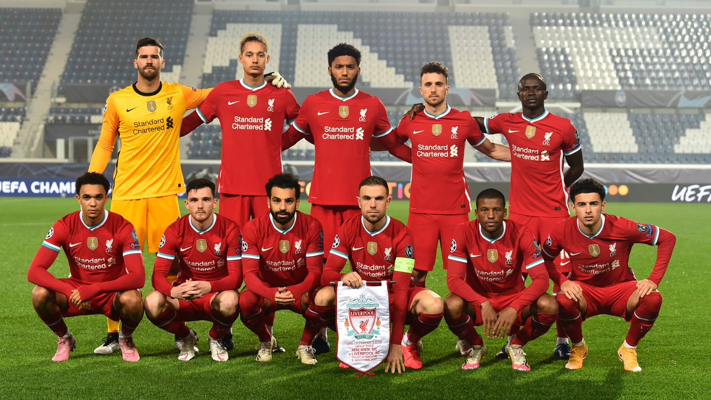
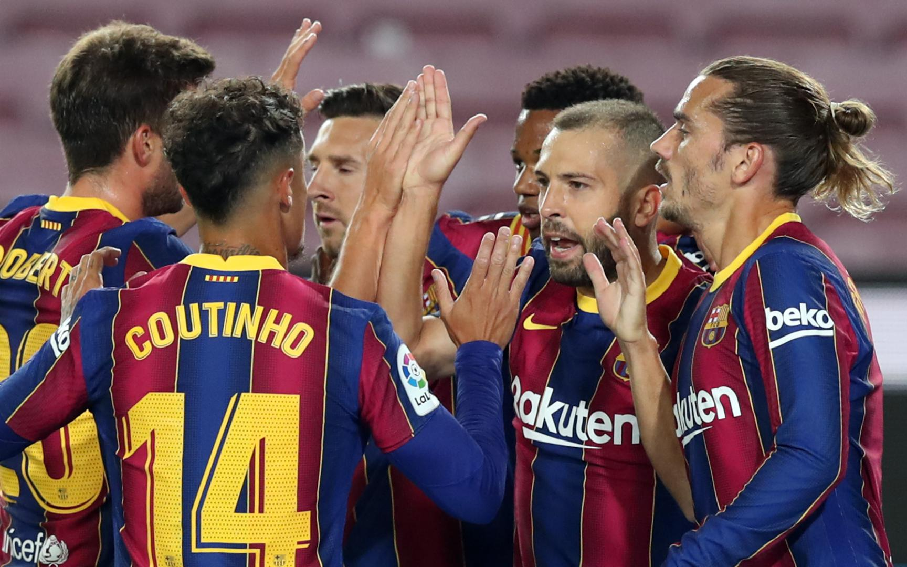
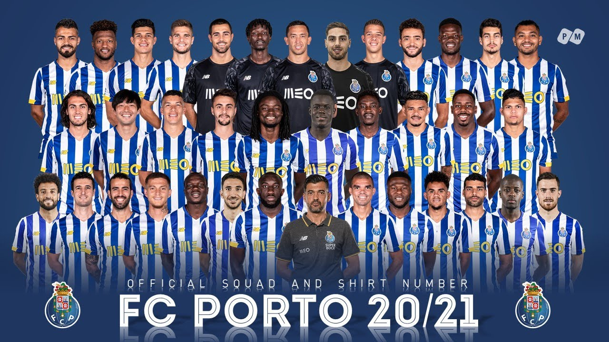
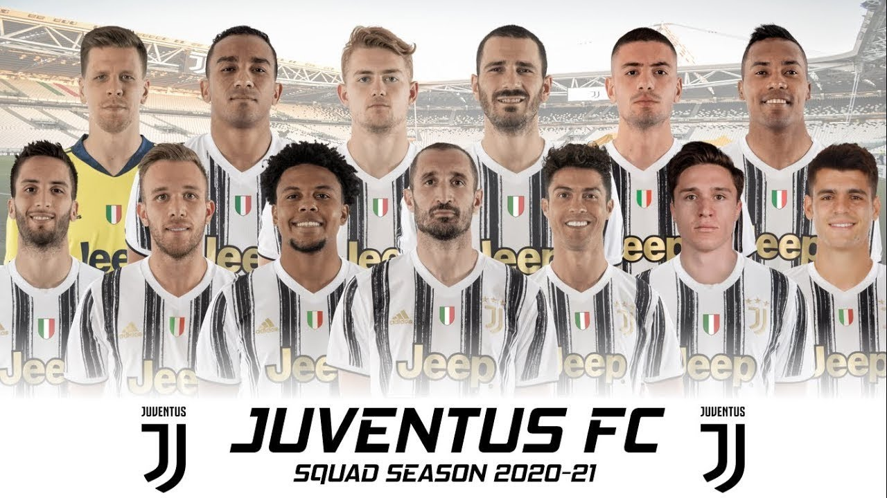
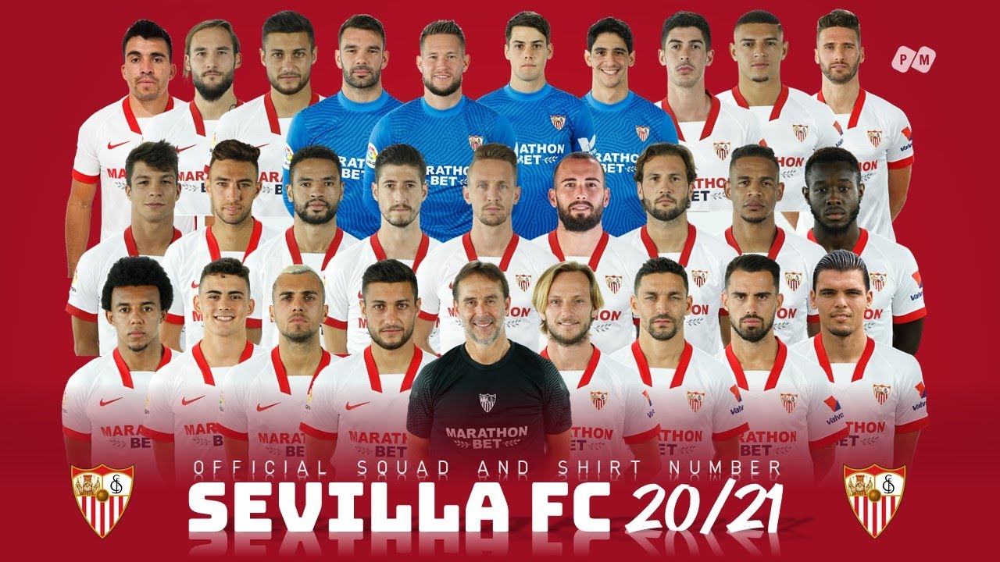
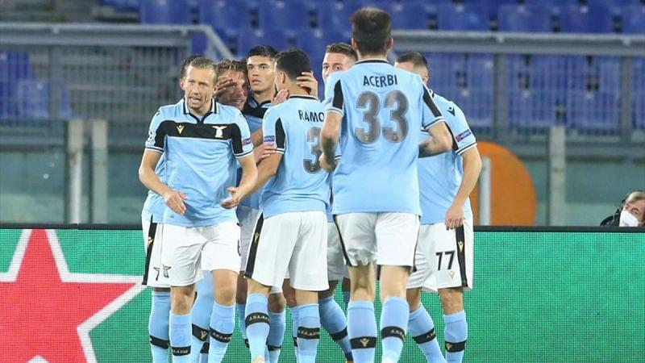
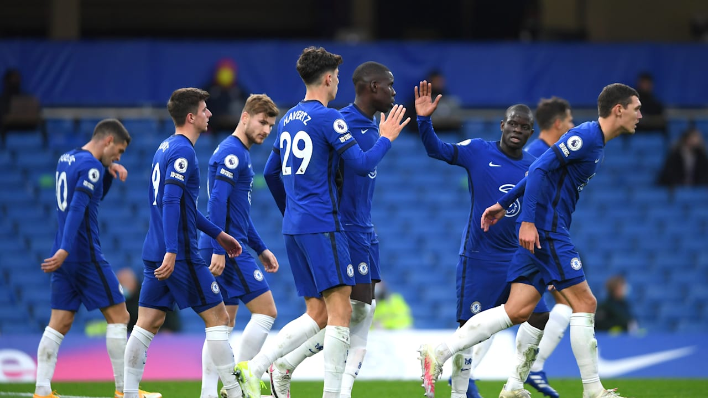
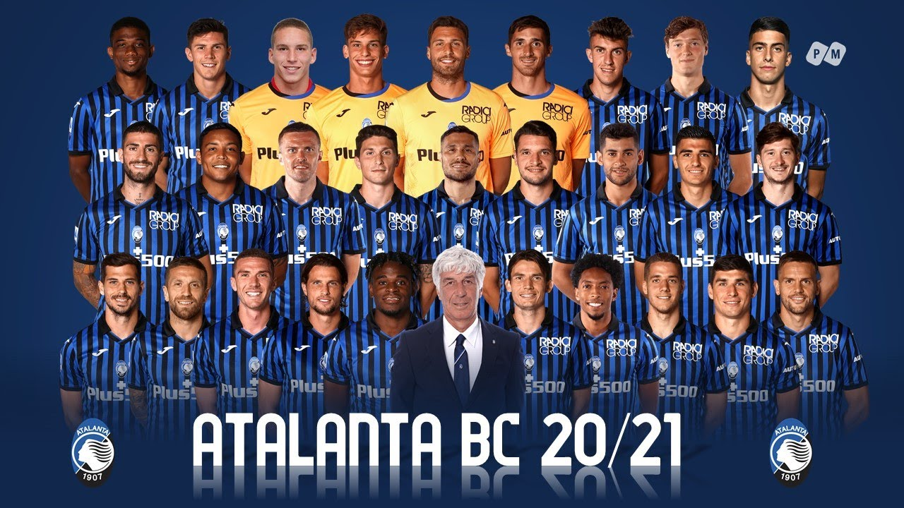

רקע על הכותב: קוראים לי עומרי עמירן. אני צופה הדוק של ליגת האלופות ואוהד ברצלונה. באתר הנ"ל אסקר את משחקי שמינית הגמר של ליגת האלופות.
1. רד בול לייפציג - ליברפול
איזה משחק מעניין. ליברפול ולייפציג זוהי יריבות מאוד מעניינת. ללא ספק, לייפציג היא הקבוצה שעשתה את קפיצת המדרגה
הכי גדולה בשנים האחרונות, ואולי אפילו הכי גדולה בהיסטוריה. מנגד, ניצבת ליברפול. ליברפול היא קבוצה עם היסטוריה
ארוכה, עם תארים רבים לאורך ההיסטוריה ועם המבצר אולי הכי גדול באירופה - אנפילד. העונה, שתי הקבוצות הללו מרשימות.
ליברפול העפילה סוף-סוף למקום הראשון בפרמייר-ליג, אחרי ניצחון דרמטי 2 - 1 על טוטנהאם בקרב הצמרת, משער של רוברטו
פירמינו בדקה ה- 90. לייפציג נמצאת כעת במקום השלישי בבונדסליגה, במרחק של נקודה אחת מהמוליכה - באייר לברקוזן.
בקיצור, יהיה מעניין מאוד. לדעתי, ליברפול היא זאת שתעפיל, אבל לייפציג לא תעשה לה את החיים קלים והיא אף מסוגלת
להפתיע אותה ולגרום לה לעוף שנה שנייה ברציפות, כבר בשלב שמינית הגמר.

לא קיבלה הגרלה קלה
ינסו לעשות כמו אתלטיקו ולהפתיע את ליברפול
2.ברצלונה - פאריס סן ז'רמן
ללא ספק, המשחק המעניין ביותר שיש לשמינית הגמר של ליגת האלופות להציע. שני מועדנים ענקיים נפגשים ביחד, כבר בשלב שמינית
הגמר, ואין ספק שהולך להיות מעניין. שתי הקבוצות העפילו בלי הרבה בעיות לשלב הבא (למרות שלפריז היו קצת בהתחלה, אבל היא גברה עליהן),
ועכשיו הן נפגשות אחת עם השנייה למפגש מרתק. מצד אחד, ברצלונה. ברצלונה, שעבר עליה קיץ קשה במיוחד, עם השמועות הרבות על עזיבה של מסי. דבר
זה גם גרם לפתיחת עונה חלשה מאוד בליגה עבור ברצלונה. אבל, ברצלונה ניצחה את שני המשחקים האחרונים שלה ונראה שהיא מתחילה
לחזור קצת לעצמה, אם כי הבעיות בהגנה עדיין נשארו, ונראה שהן רק מחמירות עם הזמן. מנגד, פאריס סן ז'רמן עשתה שלב בתים לא רע בכלל
וסיימה במקום הראשון בבית שכלל גם את לייפציג ומנצ'סטר יונייטד. בליגה, פאריס פחות מרשימה ובמחזורים האחרונים היא איבדה את
המקום הראשון לליל, איתה היא תיפגש בימים הקרובים לקרב צמרת לוהט. בסך הכללי, מצפה לנו מפגש מרתק. אני, גם מפאת היותי אוהד
ברצלונה וגם כי אני מאמין שזה יכול בכל זאת לקרות, מאמין שברצלונה תעפיל, אם כי קרב זה מאוד פתוח, ויכול ללכת לכאן ולכאן.

ברצלונה יקוו לגבור שוב על פאריס
יקוו סוף סוף לגבור על הקטאלונים
3.פורטו - יובנטוס
על הנייר, כמובן שיובנטוס פייבוריטית ברורה במפגש הזה. אני מסכים עם קביעה זו, עם כי אסור לזלזל בפורטו. פורטו עשתה
שלב בתים לא רע בכלל וסיימה במקום השני בבית שכלל גם את מנצ'סטר סיטי. היא אפילו הצליחה להוציא נקודה מתוך שש
אפשריות מול הסיטיזנס. בליגה, פורטו ממוקמת במקום השלישי, במרחק של 4 נקודות מהמוליכה ספורטינג ליסבון. מנגד, ניצבת
יובנטוס. יובנטוס לא הכי מרשימה יותר מדי עד עכשיו בליגה, אבל הם בכל זאת ממוקמים במקום השלישי בפער של 4 נקודות
ממילאן המוליכה. בליגת האלופות, יובנטוס רשמה הישג ענק, כשניצחה 3 - 0 את ברצלונה בקאמפ נואו והבטיחה את המקום
הראשון בבית, מה שכמובן סידר לה אופציות הרבה יותר נוחות, וביניהן פורטו, הקבוצה שאיתה הוגרלה יובנטוס. אני לא נותן הרבה
סיכויים לפורטו, אם כי יש סיכוי קטן שהם יכולים להפתיע. צריך לזכור שבשנה שעברה יובנטוס הודחה בהפתעת ענק בשמינית הגמר
מול ליון מצרפת.

ינסו להפתיע את אלופת איטליה

קיבלו הגרלה נוחה
4.סביליה - בורוסיה דורטמונד
זה קרב בין שתי קבוצות, שכן הרשימו בשלב הבתים של ליגת האלופות. מבחינת בורוסיה דורטמונד, כמובן שמכל האופציות, סביליה
היא אופציה שדורטמונד חות הייתה רוצה לקבל. מבחינת סביליה שסיימה שנייה, דורטמונד היא אולי האופציה הכי פחות קשה
עבורם. על הנייר, לדורטמונד יש יתרון קל על סביליה, אבל בואו לא נשכח - סביליה היא הזוכה האחרונה בליגה האירופית,
מפעל שבו היא זכתה 4 פעמים בשש השנים האחרונות. מבחינת מיקומים בליגה, אז דורטמונד רביעית בגרמניה, בפער של שש
נקודות מהמוליכה לברקוזן. סביליה ממוקמת במקום השישי בספרד בפער של 7 נקודות מהמוליכה אתלטיקו
(כך גם מריאל סוסיאדד ומריאל מדריד, אבל לסביליה יש שני משחקים פחות מריאל מדריד ושלושה פחות מריאל סוסיאדד).
צפוי לנו מפגש מעניין מאוד. אני נותן יתרון קל לדורטמונד, אבל לדעתי המפגש הזה פתוח מאוד ויכול ללכת לשני הכיוונים.

אולי ההגרלה הטובה ביותר שיכלו לקבל
היו מעדיפים לקבל קבוצה אחרת
5.לאציו - באיירן מינכן
אלופת אירופה הטרייה מתחילה את שלב הנוקאאוט עם הגרלה יחסית קלה על הנייר. לאציו הצליחה להרשים שעברה את שלב הבתים, אבל
עם כל הכבוד, אין לה באמת מה למכור מול באיירן. לאציו בכלל לא מרשימה בליגה, והיא ניצבת אחרי 12 משחקים, רק במקום ה - 9
עם 18 נקודות בלבד. מנגד, אמנם באיירן נראית פחות טוב במשחקים האחרונים והיא גם איבדה את המקום הראשון בבונדסליגה
לבאייר לברקוזן, אבל היא בכל זאת במקום השני, בפער של נקודה אחת בלבד ממנה. אלופת אירופה אולי קצת מתחילה להיחלש, אבל
אין לי ספק שהיא תעבור את לאציו בלי יותר מדי בעיות.

ללא ספק קיבלו את ההגרלה הקשה ביותר
אלופת אירופה מתחילה את שלבי הנוקאאוט עם הגרלה נוחה, על הנייר
6.אתלטיקו מדריד - צ'לסי
עוד קרב מעניין שמציעה לנו שמינית הגמר של ליגת האלופות. שתי קבוצות מעניינות מאוד. מצד אחד ההקפה החזקה של צ'לסי.
אברמוביץ' הוציא בקיץ סכום המוערך בכ - 200 מיליון יורו כדי לשפר את הסגל, ובינתיים צ'לסי נראית טוב, אם כי דווקא במשחקים
החשובים צ'לסי לא מופיעה. יש לה 0 שערי זכות במשחקים החשובים שהיא שיחקה עד כה העונה
(הפסד 2 - 0 לליברפול, 0 - 0 מול מנצ'סטר יונייטד, 0 - 0 מול טוטנהאם והפסד 1 - 0 מול ליברפול). צ'לסי הידרדרה מאוד
בטבלת הפרמייר ליג בזמן האחרון והיא ניצבת רק במקום השביעי בטבלה כרגע, אם כי בפער של 6 נקודות בלבד מהמוליכה, ליברפול.
מנגד, ניצבת אתלטיקו מדריד, שמרשימה מאוד עד כה בליגה. כרגע אתלטיקו ניצבת במקום הראשון, אם כי עם
אותה כמות נקודות כמו ריאל סוסיאדד וריאל מדריד שניצבות במקומות 2 ו - 3
(אבל לאצלטיקו יש 3 משחקים פחות מסוסיאדד ו - 2 פחות מריאל מדריד). בליגת האלופות, אתלטיקו פחות הרשימה, אבל בכל
זאת הצליחה להעפיל מהמקום השני בבית שכלל גם את אלופת אירופה (באיירן מינכן). מצפה מפגש מאוד מעניין, ונקווה
בשביל צ'לסי שהיא תתחיל להיראות טוב ולהבקיע, גם במשחקים החשובים.

נשמח לראות אותם מבקיעים גם במחשקים החשובים
הגרלה מעניינת מאוד למוליכת הליגה הספרדית
7.בורוסיה מנשנגלדבאך - מנצ'סטר סיטי
מנצ'סטר סיטי מקבלת הגרלה נוחה על הנייר, אבל עם איך שהיא נראית עד עכשיו, לא בטוח שההגרלה הזו תהיה כל כך נוחה.
מנצ'סטר סיטי מאוד מאכזבת בליגה כשהיא ניצבת במקום ה - 9 בלבד (אמנם עם משחק חסר, אבל בכל זאת היא מאכזבת).
צריך כמובן לדבר על הפציעות של שחקני מנצ'סטר סיטי ובטוח שכשהם יחזרו הקבוצה תשתפר. אבל, צריך לומר שעם כל המצב
של מגפת הקורונה, אין כמעט קבוצה שלא חווה פציעות של שחקנים, ברמה כזו או אחרת. מנגד, ניצבת בורוסיה מנשנגלדבאך, שעצם
ההפעלה שלה לשלב הזה היא הפתעה, מכיוון שעל הנייר אינטר קבוצה טובה מהם. עם כל הכבוד למה שמנשנגלדבאך עשתה
לשחטאר דונייצק, מנצ'סטר סיטי זה לבל אחר. יהיה להם מאוד קשה נגדם. בליגה, מנשנגלדבאך לא מספקים את הסחורה,
כשהם ממוקמים רק במקום ה - 8, לאחר שנים- עשר משחקים. לדעתי, מנצ'סטר סיטי תגבור על מנשנגלדבאך, אבל אם היא לא
תשתפר עד למועד המשחק, לא בטוח שזה באמת יקרה.
יקוו לפגוש את מנצ'סטר סיטי ביכולת דומה ליכולת שלהם כיום
חייבים להשתפר לקראת המפגש
אטאלאנטה - ריאל מדריד
הגרלה מעניינת מאוד לריאל מדריד. ניתן לומר שריאל הייתה מעדיפה יריבה בדמות פורטו או לאציו. שתי הקבוצות פתחו לא
טוב את העונה, אך נדמה שהן נמצאות במגמת שיפור. אטאלאנטה רושמת כבר שלושה משחקים ברציפות ללא הפסד בכל המסגרות, כולל
תיקו בטורינו מול יובנטוס במשחקה האחרון (צריך לומר, אטאלאנטה הייתה טובה יותר במשחק הזה). בכל זאת, אטאלאנטה ניצבת
רק במקום השמיני כרגע בטבלת הליגה האיטלקית. מנגד, ריאל מדריד חווה שיפור משמעותי ביכולת ובתוצאות במשחקיה האחרונים.
לבלאנקוס יש כבר 4 ניצחונות רצופים בכל המסגרות, כולל 2 - 0 מרשים על מנשנגלדבאך - מה שהבטיח להם את הכרטיס לשלב שמינית
הגמר ואפילו מהמקום הראשון וגם ניצחון 2 - 0 מרשים מאוד על אתלטיקו בדרבי של מדריד. ריאל כעת ניצבת במקום בשלישי
בטבלת הליגה הספרדית, עם אותה כמות נקודות כמו המוליכה אתלטיקו מדריד (אם כי לאתלטיקו יש שני משחקים חסרים ביחס לריאל מדריד).
לדעתי, ריאל פייבוריטית די ברורה במפגש הזה, אבל כבר ראינו שאטאלאנטה לא עושה חיים קלים לגדולות. צריך לדבר גם על מחסום
שמינית הגמר שקיים אצל ריאל מדריד. ריאל מדריד כשלה בניסיון לעבור את שלב שמינית הגמר בשנתיים האחרונות. בעונת 18/19
ריאל הודחה מול אייקאס ובאוגוסט האחרון זו הייתה מנצ'סטר סיטי שהדיחה אותה כבר בשלב הזה.

ינסו להפתיע את ריאל מדריד ולגרום להם להיות מודחים שנה שלישית ברציפות בשלב שמינית הגמר
ינסו להתגבר על מחסום שמינית הגמר
כעת, נציג לכם סרטונים ממפגשים קודמים שהתרחשו בין הקבוצות שמשחקות יחידיו כעת בשמינית הגמר.